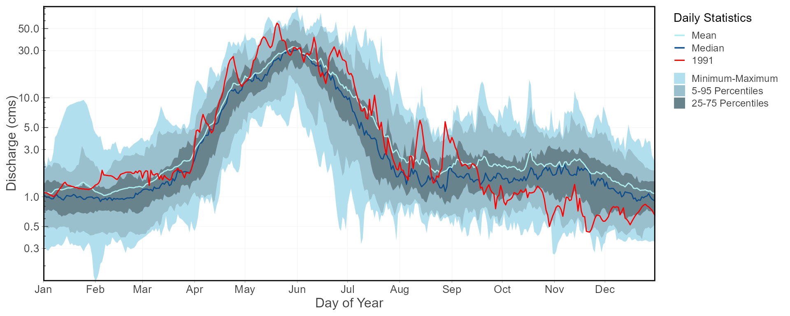
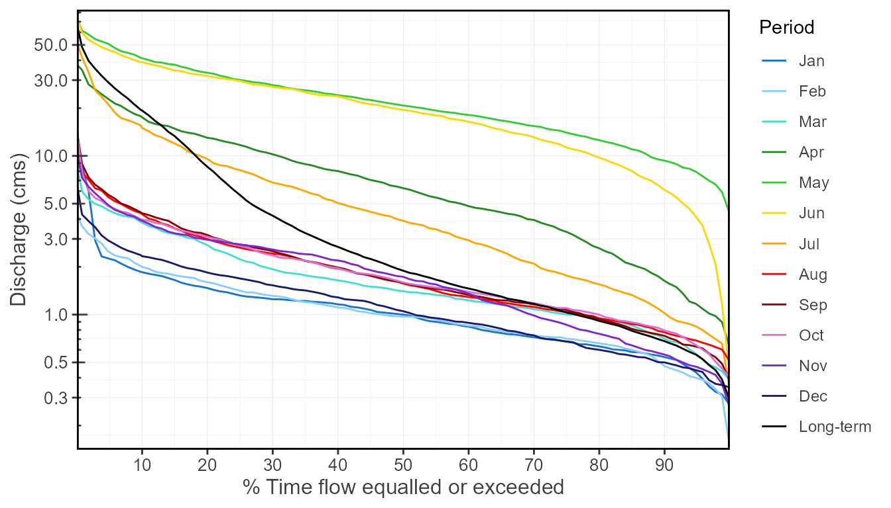
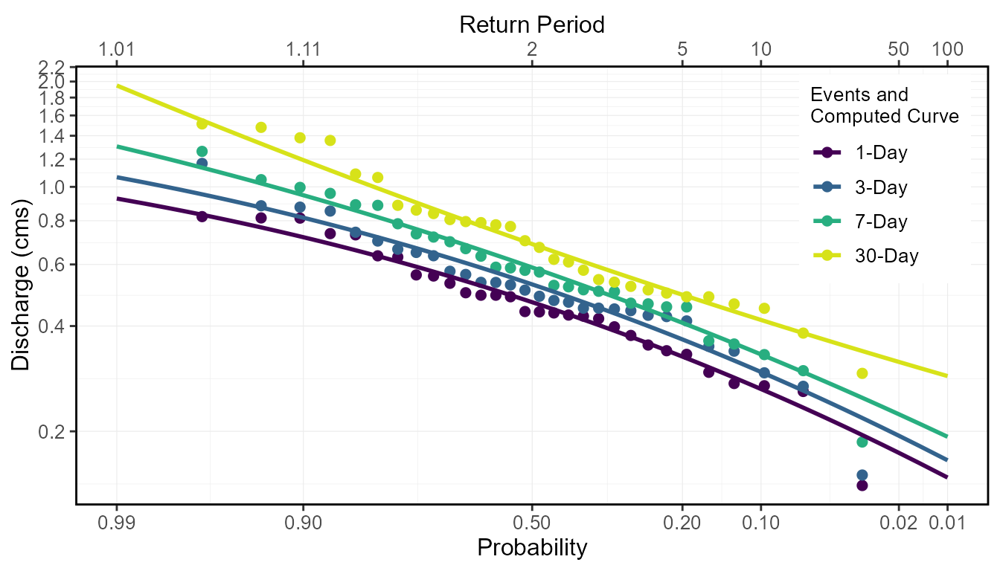

The Flow Analysis Summary Statistics Tool for R (‘fasstr’) is a set of R functions to clean, summarize, analyze, trend, and visualize streamflow data. This package summarizes continuous daily mean streamflow data into various daily, monthly, annual, and long-term statistics, completes annual trends and frequency analyses, in both table and plot formats.
This package provides functions with solutions for streamflow data:
add_* and fill_* functions),screen_* functions),calc_* and compute_* functions), andplot_* functions), amongst others.Useful features of functions include:
You can install ‘fasstr’ using the following code. It may take a few moments as there are several dependency packages will also be installed, including ‘tidyhydat’ for downloading Water Survey of Canada hydrometric data, ‘zyp’ for trending, ‘ggplot2’ for creating plots, and ‘dplyr’ and ‘tidyr’ for various data wrangling and summarizing functions, amongst others.
install.packages("fasstr")
To install the development version of the ‘fasstr’ package, you need to install the remotes package then the ‘fasstr’ package.
if(!requireNamespace("remotes")) install.packages("remotes") remotes::install_github("bcgov/fasstr")
To call the ‘fasstr’ functions you can either load the package using the library(fasstr) function or access a specific function using a double-colon (e.g. fasstr::calc_daily_stats()).
To utilize the ‘tidyhydat’ features (using the station_number argument), you will need to download a HYDAT database using the tidyhydat::download_hydat() function.
All functions in ‘fasstr’ require a daily mean streamflow dataset from one or more hydrometric stations. Long-term and continuous datasets are preferred for most analyses, but seasonal and partial data can be used. Other daily time series data, like temperature, precipitation or water levels, may also be used, but with certain caution as some calculations/conversions are based on units of streamflow (cubic metres per second). Data is provided to each function using the either the data argument, as a data frame, or the station_number argument, as a list of Water Survey of Canada HYDAT station numbers.
Using the data option, a data frame of daily data containing columns of dates (YYYY-MM-DD in date format), values (mean daily discharge in cubic metres per second in numeric format), and, optionally, grouping identifiers (character string of station names or numbers) is called. By default the functions will look for columns identified as ‘Date’, ‘Value’, and ‘STATION_NUMBER’, respectively, to be compatible with the ‘tidyhydat’ defaults, but columns of different names can be identified using the dates, values, groups column arguments (ex. values = Yield_mm). The following is an example of an appropriate dataframe (STATION_NUMBER not required):
## STATION_NUMBER Date Value
## 1 08NM116 1949-04-01 1.13
## 2 08NM116 1949-04-02 1.53
## 3 08NM116 1949-04-03 2.07
## 4 08NM116 1949-04-04 2.07
## 5 08NM116 1949-04-05 2.21
## 6 08NM116 1949-04-06 2.21Alternatively, you can directly extract a flow data set directly from a HYDAT database by listing station numbers in the station_number argument (ex. station_number = "08NM116" or station_number = c("08NM116", "08NM242")) while leaving the data arguments blank. A data frame of daily streamflow data for all stations listed will be extracted using ‘tidyhydat’. Use the following function to download a HYDAT database:
tidyhydat::download_hydat()
This package allows for multiple stations (or other groupings) to be analyzed in many of the functions provided identifiers are provided using the groups column argument (defaults to STATION_NUMBER). If grouping column doesn’t exist or is improperly named, then all values listed in the values column will be summarized.
These functions, that start with add_* and fill_*, add columns and rows, respectively, to your streamflow data frame to help set up your data for further analysis. Examples include adding rolling means, adding date variables (Year, Month, DayofYear, etc.), adding basin areas, adding columns of volumetric and yield discharge, and filling dates with missing flow values with NA.
The analysis functions summarize your discharge values into various statistics. screen_* functions summarize annual data for outliers and missing dates. calc_* functions calculate daily, monthly, annual, and long-term statistics (e.g. mean, median, maximum, minimum, percentiles, amongst others) of daily, rolling days, and cumulative flow data. compute_* functions also analyze data but produce more in-depth analyses, like frequency and trending analysis, and may produce multiple plots and tables as a result. All tables are in tibble data frame formats. Can use write_flow_data() or write_results() to customize saving tibbles to a local drive.
The visualization functions, which begin with plot_* plot the various summary statistics and analyses as a way to visualize the data. While most plotting functions are as customizable as the analysis functions, some come pre-set with statistics that cannot be changed for consistency. Plots can be modified by the user using the ggplot2 package and its functions. All plots functions produce lists of plots (even if just one produced). Can use write_plots() to customize saving the lists of plots to a local drive (within folders or PDF documents).
If certain n-day rolling mean statistics are desired to be analyzed (e.g. 3- or 7-day rolling means) some functions provide the ability to select for that as function arguments (e.g. rolling_days = 7 and rolling_align = "right"). The rolling day align is the placement of the date amongst the n-day means, where “right” averages the day-of and previous n-1 days, “centre” date is in the middle of the averages, and “left” averages the day-of and the following n-1 days. For your own analyses you can add rolling means to your dataset using the add_rolling_means() function.
To customize your analyses for specific time periods, you can designate the start and end years of your analysis using the start_year and end_year arguments and remove any unwanted years (for partial datasets for example) by listing them in the excluded_years argument (e.g. excluded_years = c(1990, 1992:1994)). Alternatively, some functions have an argument called complete_years that summarizes data from just those years which have a complete flow record. Some functions will also allow you to select the months of a year to analyze, using the months argument, as opposed to all months (if you want just summer low-flows, for example). Leaving these arguments blank will result in the summary/analysis of all years and months of the provided dataset.
To group analyses by water, or hydrologic, years instead of calendar years, if desired, you can set water_year_start within most functions to another month than 1 (for January). A water year can be defined as a 12-month period that comprises a complete hydrologic cycle (wet seasons can typically cross calendar year), typically starting with the month with minimum flows (the start of a new water recharge cycle). As water years commonly start in October, the default water year is October for ‘fasstr’. If another start month is desired, you can choose is using the water_year_start argument (numeric month) to designate the water year time period. The water year label is designated by the year it ends in (e.g. water year 2000 goes from Oct 1, 1999 to Sep 30, 2000). Start, end and excluded years will be based on the specified water year.
For your own analyses, you can add date variables to your dataset using the add_date_variables() or add_seasons() functions.
Yield runoff statistics (in millimetres) calculated in the some of the functions require an upstream drainage basin area (in sq. km) using the basin_area argument, where required. If no basin areas are supplied, all yield results will be NA. To apply a basin area (10 sqkm for example) to all daily observations, set the argument as basin_area = 10. If there are multiple stations or groups to apply multiple basin areas (using the groups argument), set them individually using this option: basin_area = c("08NM116" = 795, "08NM242" = 22). If a STATION_NUMBER column exists with HYDAT station numbers, the function will automatically use the basin areas provided in HYDAT, if available, so basin_area is not required. For your own analyses, you can add basin areas to your dataset using the add_basin_area() function.
With the use of the ignore_missing argument in most function, you can decide how to handle dates with missing flow values in calculations. When you set ignore_missing = TRUE a statistic will be calculated for a given year, all years, or month regardless of if there are missing flow values. When ignore_missing = FALSE the returned value for the period will be NA if there are missing values.
Some functions have an argument called complete_years which can be used, when set to TRUE, to filter out years that have partial datasets (for seasonal or other reasons) and only years with full data are used to calculate statistics.
To determine the summary statistics of daily data by month (mean, median, maximum, minimum, and some percentiles) you can use the calc_longterm_daily_stats() function. If the ‘Mission Creek near East Kelowna’ hydrometric station is of interest you can list the station number in the station_number argument to obtain the data (if ‘tidyhydat’ and HYDAT are installed).
calc_longterm_daily_stats(station_number = "08NM116", start_year = 1981, end_year = 2010, custom_months = 7:9, custom_months_label = "Summer")
## # A tibble: 14 x 8
## STATION_NUMBER Month Mean Median Maximum Minimum P10 P90
## <chr> <fct> <dbl> <dbl> <dbl> <dbl> <dbl> <dbl>
## 1 08NM116 Jan 1.22 1 9.5 0.160 0.540 1.85
## 2 08NM116 Feb 1.16 0.970 4.41 0.140 0.474 1.99
## 3 08NM116 Mar 1.85 1.40 9.86 0.380 0.705 3.80
## 4 08NM116 Apr 8.32 6.26 37.9 0.505 1.63 17.5
## 5 08NM116 May 23.6 20.8 74.4 3.83 9.33 41.2
## 6 08NM116 Jun 21.5 19.5 84.5 0.450 6.10 38.9
## 7 08NM116 Jul 6.48 3.90 54.5 0.332 1.02 15
## 8 08NM116 Aug 2.13 1.57 13.3 0.427 0.775 4.29
## 9 08NM116 Sep 2.19 1.58 14.6 0.364 0.735 4.35
## 10 08NM116 Oct 2.10 1.60 15.2 0.267 0.794 3.98
## 11 08NM116 Nov 2.04 1.73 11.7 0.260 0.560 3.90
## 12 08NM116 Dec 1.30 1.05 7.30 0.342 0.5 2.33
## 13 08NM116 Long-term 6.17 1.89 84.5 0.140 0.680 19.3
## 14 08NM116 Summer 3.61 1.98 54.5 0.332 0.799 7.64To visualize the daily streamflow patterns on an annual basis, the plot_daily_stats() function will plot out various summary statistics for each day of the year. Data can also be filtered for certain years of interest (a 1981-2010 normals period for this example) using the start_year and end_year arguments. We can also compare individual years against the statistics using add_year argument like below.
plot_daily_stats(station_number = "08NM116", start_year = 1981, end_year = 2010, log_discharge = TRUE, add_year = 1991, ignore_missing = TRUE)
## $Daily_Statistics
Flow duration curves can be produced using the plot_flow_duration() function.
plot_flow_duration(station_number = "08NM116", start_year = 1981, end_year = 2010)
## $Flow_Duration
This package also provides a function, compute_annual_frequencies(), to complete frequency analyses (using the same methods as HEC-SSP). The default fitting distribution is ‘log-Pearson Type III’, but the ‘Weibull’ distribution can also be used. Other default plotting and fitting methods are described in the function documentation. For this example, the 7-day low-flow (low-flow is default) quantiles are calculated for the Mission Creek hydrometric station using the ‘log-Pearson Type III’ distribution. With this, several low-flow indicators can be determined (i.e. 7Q5, 7Q10).
freq_results <- compute_annual_frequencies(station_number = "08NM116", start_year = 1981, end_year = 2010, roll_days = 7) freq_results$Freq_Fitted_Quantiles
## # A tibble: 11 x 4
## Distribution Probability `Return Period` `7-Day`
## <chr> <dbl> <dbl> <dbl>
## 1 PIII 0.01 100 0.193
## 2 PIII 0.05 20 0.277
## 3 PIII 0.1 10 0.332
## 4 PIII 0.2 5 0.408
## 5 PIII 0.5 2 0.588
## 6 PIII 0.8 1.25 0.812
## 7 PIII 0.9 1.11 0.946
## 8 PIII 0.95 1.05 1.07
## 9 PIII 0.975 1.03 1.17
## 10 PIII 0.98 1.02 1.21
## 11 PIII 0.99 1.01 1.31The probability of observed extreme events can also be plotted (using selected plotting position) along with the computed quantiles curve for comparison.
freq_results <- compute_annual_frequencies(station_number = "08NM116", start_year = 1981, end_year = 2010, roll_days = c(1,3,7,30)) freq_results$Freq_Plot
